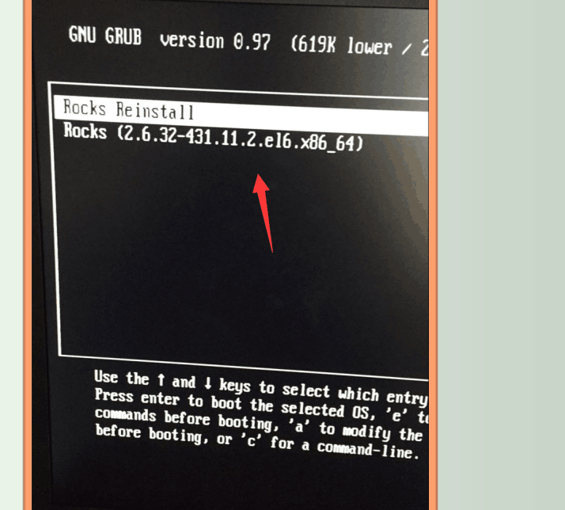
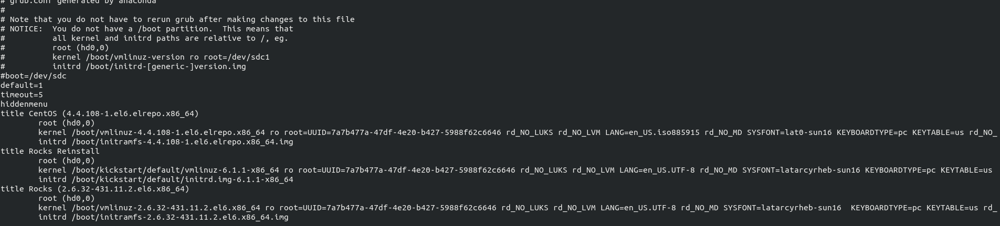

-
逻辑CPU数
cat /proc/cpuinfo|grep "processor"|wc -
物理CPU数
cat /proc/cpuinfo|grep "physical\ id"|sort -u|wc -
CPU核数
cat /proc/cpuinfo|grep "cores"|sort -u -
GPU计算卡
lspci | grep NVIDIA -
Raid0: 最少需要2块盘，没用冗余数据,不做备份，任何一块磁盘损坏都无法运行。n块磁盘（同类型）的阵列理论上读写速度是单块磁盘的n倍(实际达不到)，风险性也是单一n倍（实际更高），是磁盘阵列中存储性能最好的。适用于安全性不高，要求比较高性能的图形工作站或者个人站。
-
Raid1：至少需要2块*盘，磁盘数量是2的n倍，每一块磁盘要有对应的备份盘，利用率是50%，只要有一对磁盘没有损坏就可以正常使用。n组磁盘（2n块同类型磁盘）的阵列理论上读取速度是单块磁盘的n倍（实际达不到），风险性是单一磁盘的n分之一（实际更低）。换盘后需要长时间的镜像同步，不影响外界访问，但整个系统性能下降。磁盘控制器负载比较大。适用于安全性较高，且能较快恢复数据的场合。
-
Raid10：至少需要4块盘，磁盘数量也是2的n倍。既有数据镜像备份，也能保证较高的读写速度。成本比较大。
-
Raid3：至少需要3块盘（2块盘没有校验的意义）。将数据存放在n+1块盘上，有效空间是n块盘的总和，最后一块存储校验信息。数据被分割存储在n块盘上，任一数据盘出现问题，可由其他数据盘通过校正监测恢复数据（可以带伤工作），换数据盘需要重新恢复完整的校验容错信息。对阵列写入时会重写校验盘的内容，对校验盘的负载较大，读写速度相较于Raid0较慢，适用于读取多而写入少的应用环境，比如数据库和web服务器。使用容错算法和分块的大小决定了Raid3在通常情况下用于大文件且安全性要求较高的应用，比如视频编辑、硬盘播出机、大型数据库等。
-
Raid5：至少需要3块盘，读取速度接近Raid0，但是安全性更高。安全性上接近Raid1，但是磁盘的利用率更高。可以认为是Raid0和Raid1的一个折中方案。只允许有一块盘出错，可以通过另外多块盘来计算出故障盘的数据，故障之后必须尽快更换。比Raid0+1的磁盘利用率高，是目前比较常用的一种方案。
-
配置
- commput0
- [2.10GHz] * 4 * 8核/CPU * 2线程/核 = 64
- 1T * 6块 >>> 3T(raid10), 1.9T+792G未知
- compute1-4
- [2.60GHz] * 4 * 6核/CPU * 2线程/核 = 48
- TeslaK20Xm GPU ，cuda核心数 2688， 内存6G
- compute5
- [2.60GHz] * 4 * 6核/CPU * 2线程/核 = 48
- compute6
- [2.20GHz] * 4 * 6核/CPU * 2线程/核 = 48
- compute7-8
- [2.30GHz] * 4 * 8核/CPU * 2线程/核 = 64
- 数据线(raid5)
- 3T * 3块 >>> 6T
- 4T * 6块 >>> 18T
- 8T * 3块 >>> 15T
- 网线(raid5)
- 4T * 5块 >>> 16T
- 4T * 5块 >>> 16T
- 8T * 5块 >>> 30T
-
所有节点运行
rocks run host "hostname" -
同步配制
rocks sync config -
要先重启管理节点然后计算机节点,否则导致数据不同步
rocks run host "/etc/init.d/pbs_mom restart" -
添加用户无法qusb要在/etc/group 添加用户
useradd -g group name #/etc/passwd name:x:xxx:xxx::/export/home/casual:/bin/bash passwd name rocks sync users #可更改/export/home/name 为 /home/name : /etc/passwd name:x:xxx:xxx::/home/casual:/bin/bash #如果要修改用户名（未测试过） usermod -l newName oldName mv /export/home/newName /export/home/oldName usermod -d /export/home/newName -m newName rocks sync users
-
如果ssh compute 需要输入密码
rm -rf ~/.ssh #然后 退出登录 再登陆 会自动生成新密钥 -
进入单用户模式
在倒计时5秒时，按任意键出现下图， 选择如图，按e进入编辑, 最后加上１,回车,按b,root进入系统 


-
重装节点
rocks set host pxeboot compute1 action=install -
提交任务后，无运行时间,且qdel: Server could not connect to MOM
由于节点pbs_mom没运行 解决办法是进入节点后运行pbs_mom
- 硬件连接及硬盘灯(绿)
-
确定服务开启:
service iscsi restart -
查看iscsi发现记录
iscsiadm -m node -
发现iscsi存储：
iscsiadm -m discovery -t st -p 10.1.1.100:3260 iscsiadm -m discovery -t st -p 10.1.1.101:3260 iscsiadm -m discovery -t st -p 10.1.1.102:3260 iscsiadm -m discovery -t st -p 10.1.1.103:3260
-
multipath操作
multipath -ll #查看 multipath -v2 #自动更新路径 multipath -f mpathg # 删除路径 service multipathd restart #重启确认/dev/mapper下有硬盘连接 # 挂载 mount /dev/mapper/mpathep1 /export/data2 mount /dev/mapper/mpathfp1 /export/data3 mount /dev/mapper/mpathhp1 /export/data4
-
挂载fstab
/dev/sdc1 /export/data0 ext4 defaults 1 1 /dev/sdc2 /export/data1 ext4 defaults 1 1 /dev/sde1 /export/data5 ext4 defaults 1 1 /dev/mapper/mpathhp1 /export/data4 xfs defaults,_netdev 0 0 /dev/mapper/mpathep1 /export/data2 xfs defaults,_netdev 0 0 /dev/mapper/mpathfp1 /export/data3 xfs defaults,_netdev 0 0
-
autofs自动挂载
autofs一般与ldap、nfs协作实现远程home目录。
-
确认/export/*,一般重启服务
service autofs restart -
/etc/auto.master
/share /etc/auto.share --timeout=1200 /home /etc/auto.home --timeout=1200
-
/etc/auto.share
apps -nfsvers=3 -soft,intr,timeo=9999 xmu.local:/export/& #bio -nfsvers=3 -soft,intr,timeo=9999 xmu:/export/& data0 -nfsvers=3 -soft,intr,timeo=9999 xmu.local:/export/& data1 -nfsvers=3 -soft,intr,timeo=9999 xmu.local:/export/& data2 -nfsvers=3 -soft,intr,timeo=9999 xmu.local:/export/& data3 -nfsvers=3 -soft,intr,timeo=9999 xmu.local:/export/& data4 -nfsvers=3 -soft,intr,timeo=9999 xmu.local:/export/& data5 -nfsvers=3 -soft,intr,timeo=9999 xmu.local:/export/&
-
修复分区(未完)
exportfs -rv #重新扫描/etc/exports exportfs -u /export/data2 #umount分区 xfs_check /dev/mapper/mpathep1;echo $? #显示0表示已umount
常用操作
电源
| 插座 | 1孔 | 2孔 | 3孔 | 4孔 | 5孔 | 6孔 | 7孔 | 8孔 |
|---|---|---|---|---|---|---|---|---|
| 4号 | 1上 | 1下 | 2下 | 4上 | 2上 | 3下 | 3上 | 插座3号 |
| 3号 | 8下 | 8上 | 7下 | 7上 | 大右 | 大左 | ||
| 2号 | 4下 | 显 | 交下 | 5下 | 交上 | 5上 | ||
| 1号 | 插座2号 | 小右 | 6左 | 外下 | 管上 | 6右 | 管下 | 小左 |
清理内存
echo 1 > /proc/sys/vm/drop_caches
登录显示信息
158挂载swap
mount /dev/sdc1 /extra
核心数
/proc/cpuinfo 用来存储cpu硬件信息 一颗cpu可以有多核，加上intel的超线程技术(HT), 可以在逻辑上再分一倍数量的cpu core出来 逻辑CPU数量 = 物理cpu数量 × cpu 核数 x 2(如果支持并开启ht)
| 逻辑CPU | 物理CPU | CPU核数 |
|---|---|---|
| 最大线程数 | 实际服务器插槽上的CPU数目 | CPU核心数 |
硬盘
rocks
qmgr
qmgr -c "print server" # 输出server的属性
qmgr -c "set server query_other_jobs = true" # qstat可以查看所有用户
qmgr -c "set server auto_node_np = True" # 自动更新节点线程数
Draining system to allow starving job to run (qstat -s)
队列中还有排队非常久的饥饿进程，为了更公平合理使用队列，所以将新提交的作业做置为排队状态以让出资源运行排队的饥饿作业
修改/opt/torque/spool/sched_priv/sched_config
before: help_starving_jobs true ALL
after: help_starving_jobs false ALL
/opt/torque/init.d/pbs_sched pbs_mom pbs_server
service pbs_server restart
multipath与iscsi操作
qsub
1.指定运行节点
qsub -l nodes=1:n3:ppn=40
qusb -l nodes=1:n1:ppn=+1:n2
2.重新运行任务
qrerun
3.lib
for i in `seq 1 8`;
do
sudo scp /etc/profile.d/set.sh compute-0-$i:/etc/profile.d/set.sh
done
rm /usr/lib64/libstdc++.so.6
ln -s /share/apps/gcc-5.3.0/lib64/libstdc++.so.6.0.21 libstdc++.so.6
strings /usr/lib/libstdc++.so.6 | grep
CentOS 6.5 升级内核
rpm --import https://www.elrepo.org/RPM-GPG-KEY-elrepo.org
rpm -Uvh http://www.elrepo.org/elrepo-release-6-8.el6.elrepo.noarch.rpm
yum elrepo源有 ml（mainline 为最新版本的内核）和 lt（长期支持的内核）两种内核，这里我们选择 lt 内核
yum --enablerepo=elrepo-kernel -y install kernel-lt （kernel-ml）
引导文件修改（grub.conf）
将 default 设置为 0 ，default=0
vim /etc/grub.conf

使用 fail2ban 防御 SSH 服务器的暴力破解攻击
install glibc
conda install -c asmeurer glibc